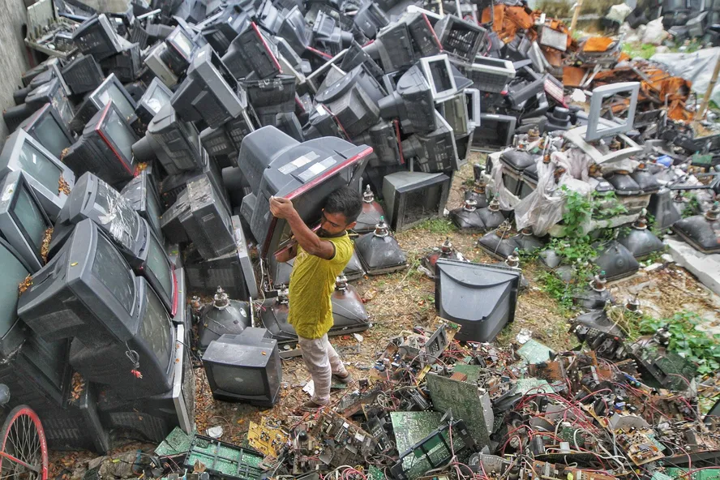
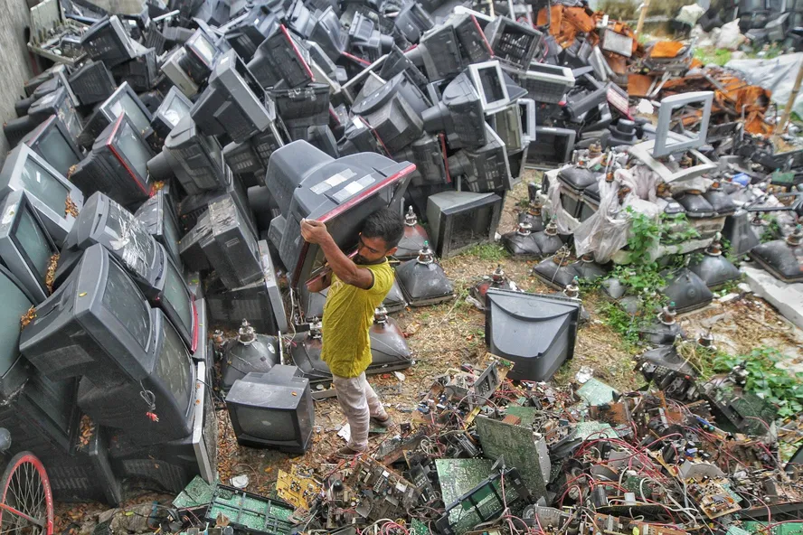

O descarte correto de lixos eletrônicos é de extrema importância para a preservação do meio ambiente e a saúde pública.
 

+ Pontos de coleta
Nosso site tem como principal objetivo promover a conscientização sobre a importância do descarte
correto de lixo eletrônico e facilitar o acesso a informações sobre pontos de coleta em sua região.
Com o crescimento constante da tecnologia, a quantidade de dispositivos eletrônicos descartados de
forma inadequada vem aumentando, o que representa uma séria ameaça ao meio ambiente e à saúde
pública.
Equipamentos eletrônicos contêm substâncias perigosas, como chumbo, mercúrio e cádmio, que podem
contaminar o solo e a água, causando danos irreversíveis ao ecossistema. Além disso, a queima
incorreta desses materiais libera gases tóxicos, colocando em risco a saúde das comunidades
próximas.
Nosso site busca não apenas informar, mas também encorajar a reciclagem desses produtos, ajudando a
recuperar recursos valiosos e a reduzir o impacto ambiental. Através da economia circular, os
materiais podem ser reaproveitados, minimizando a extração de novos recursos e contribuindo para um
futuro mais sustentável.
É fundamental que cada pessoa entenda o papel que desempenha nessa causa. Fornecemos informações
claras sobre como e onde descartar corretamente o lixo eletrônico, além de incentivar o envolvimento
comunitário por meio da sugestão de novos pontos de coleta. Juntos, podemos fazer a diferença para
preservar o meio ambiente e proteger as futuras gerações.